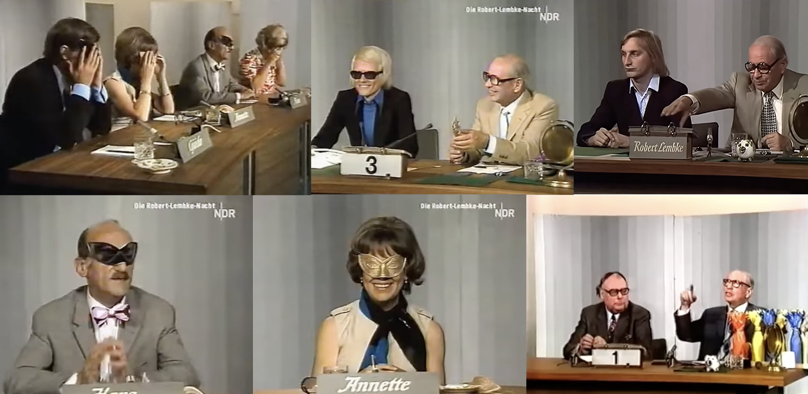
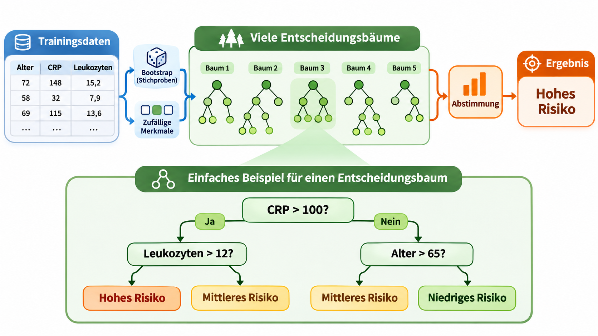
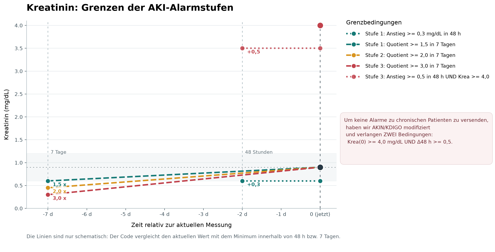

1. Säubern
Beschädigte Messungen, Dubletten und falsche Labels prüfen, korrigieren oder entfernen.
Echte Extremwerte nicht pauschal löschen!
Prof. Dr. phil. nat. René Staritzbichler, 5.11.2026

Beschädigte Messungen, Dubletten und falsche Labels prüfen, korrigieren oder entfernen.
Echte Extremwerte nicht pauschal löschen!
Training · Validierung · Test
Für die Vorhersage bei neuen Patienten: patientenweise trennen.
Zeitliche Abhängigkeiten beachten.
Fehlende Werte gezielt behandeln, z. B. ergänzen (Imputation).
Merkmale bei Bedarf auf vergleichbare Skalen bringen, z. B. standardisieren.
Eine geeignete Darstellung kann das Lernen vereinfachen.
Fourier: Frequenzanteile eines Signals.
PCA: Verdichtung auf Hauptkomponenten; Informationsverlust möglich.
Klassen gewichten oder Trainingsfälle über-/unterabtasten.
Pro: Seltene Klasse stärker berücksichtigen.
Contra: Unterabtasten verliert Daten; Duplizieren kann Overfitting fördern.
Immer „negativ“ vorhersagen ergibt:
98 % Genauigkeit – aber 0 % Sensitivität!
Auch Sensitivität, Präzision (PPV) und F1 bewerten.
337 Sendungen 1955 - 1989 mit ca. 10-14 Millionen Zuschauer pro Sendung



Erkennung aus kleinem Blutbild, Alter, Geschlecht
Rote Ampel im SAP
Pilotstudie mit Gastroenterologie und ZNA
50 erkannte Fälle in 19 Tagen
Erkennung aus kleinem Blutbild
Erkennung aus Kreatinin-Verlauf
Auf Befund und gelbe Ampel im SAP
Durchschnittlich 33 erkannte Fälle pro Tag
Erkennung anhand des Kaliumwerts
Kalium < 2,5 mmol/L: neue Anforderung nach 6 Stunden
Berechnung aus PLT, GOT, GPT, Alter
Etablierter Score
Auf Anforderung
